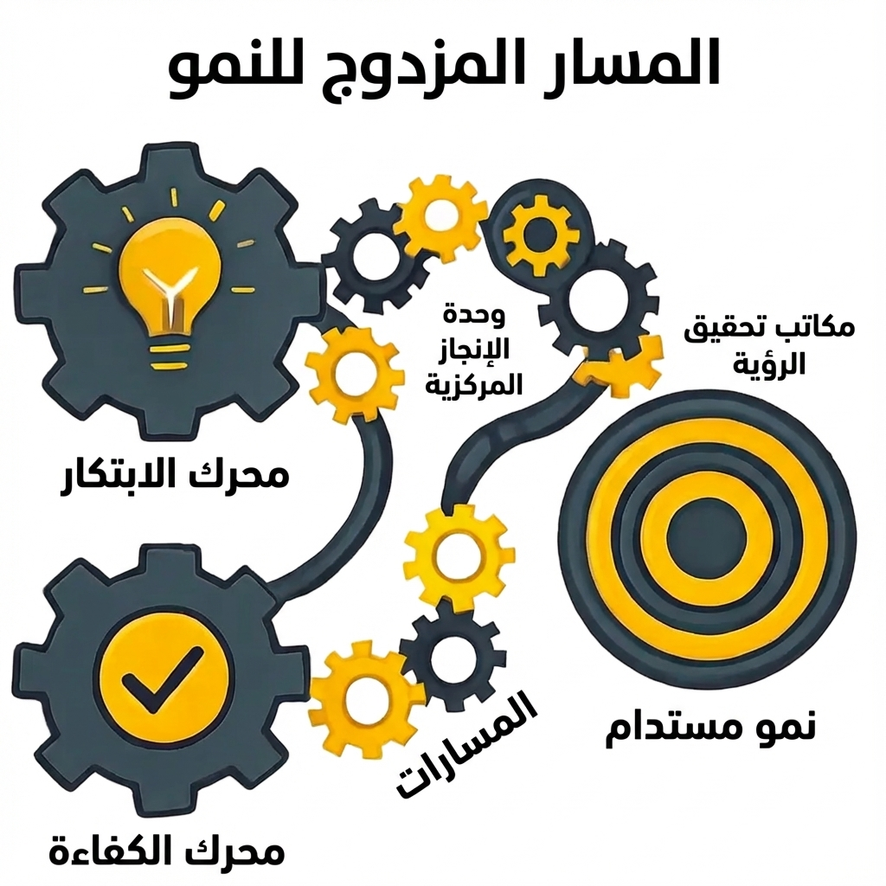

في حلقتنا السابقة، عرفنا الحوكمة بأنها "نظام التشغيل" الذي يحدد مسار التحول. الآن، ندخل إلى غرفة المحركات. التسليم هو مجموعة الممارسات المنضبطة التي تدفع التحول إلى الأمام، وتضمن تنفيذ العمل بدقة وأن المخرجات تولد قيمة استراتيجية حقيقية.
إذا كانت الحوكمة تتعلق باتخاذ القرارات الصحيحة، فإن التسليم يتعلق بتنفيذ القرارات بشكل صحيح. إنها الإدارة النشطة والعملية للبرامج والمبادرات التي تحول المخططات المعمارية إلى قدرات تشغيلية ملموسة.
نقطة البداية
العمل الخاص بمحرك التسليم - البرامج والمبادرات المعتمدة - لا يظهر من العدم. إنه الناتج المباشر لعملية إدارة المحفظة الاستراتيجية (SPM).
كما ناقشنا في الحلقتين 2.2 و 3.1، تُعد إدارة المحفظة الاستراتيجية نظامًا على مستوى الحوكمة لاختيار الاستثمارات وتحديد أولوياتها. وتجيب عن السؤال: "ما هي الأشياء الصحيحة التي يجب القيام بها لتحقيق أهدافنا الاستراتيجية؟". بمجرد اتخاذ هيئات حوكمة المحفظة لتلك القرارات، يتحول التركيز من "القيام بالأشياء الصحيحة" إلى "القيام بالأشياء بشكل صحيح". هذا هو المكان الذي يتولى فيه محرك التسليم المهمة.

الشكل 1: مساران للتسليم - ضمان القيمة وضمان التسليم
شقا التسليم
التسليم الفعال هو تخصص مزدوج يعمل على مستويين متميزين. هذا الفصل ضروري للحفاظ على كل من المواءمة الاستراتيجية والسيطرة التكتيكية.
ضمان القيمة (إدارة البرامج): "تحقيق القيمة"
يحدث هذا على مستوى L1/L2 من التسلسل الهرمي لدينا. بمجرد اعتماد البرنامج من قبل المحفظة، يصبح مدير البرنامج مسؤولاً عن ضمان أن مجموعة المبادرات داخله تقدم بنجاح النتائج التجارية المقصودة وتحرك مؤشرات الأداء الرائدة المستهدفة. تركيزهم استراتيجي: إدارة التبعيات عبر المبادرات، وضمان استعداد الأعمال لتبني التغييرات، ومنع "تسرب القيمة" بين اكتمال المشروع والواقع التشغيلي.
ضمان التسليم (إدارة المشاريع): "القيام بالأشياء بشكل صحيح"
هذا هو تخصص التنفيذ الكلاسيكي لمستوى L2/L3. مدير المشروع مسؤول عن "المثلث الحديدي": تسليم مبادرته المحددة ومخرجاتها الرئيسية ضمن النطاق، وفي الوقت المحدد، وفي حدود الميزانية. تركيزهم تكتيكي: إدارة خطط العمل، وحل المعوقات، وتتبع التقدم، وضمان جودة الناتج النهائي.
مكتب إدارة المشاريع الحديث
في هذا النموذج المصمم هندسيًا، يعد مكتب إدارة التحول (TMO أو PMO) المركز الرئيسي للخبرة الذي يوفر أطر العمل والمعايير والدعم المباشر لكل من ضمان القيمة وضمان التسليم. وهو مسؤول عن:
وضع المعايير: توفير القوالب والإرشادات لخطط المشاريع وسجلات المخاطر وتقارير الحالة.
بناء القدرات: تدريب وتوجيه مديري المشاريع والبرامج عبر المنظمة.
إدارة التبعيات: امتلاك خارطة الطريق المتكاملة الرئيسية التي تجعل التبعيات عبر البرامج مرئية.
إدارة المخاطر النشطة: تحديد وتصعيد المخاطر على مستوى البرنامج التي قد لا تراها فرق المشاريع الفردية.
تأطير التسليم كإدارة نشطة للمخاطر
وظيفة التسليم بأكملها هي تخصص لإدارة المخاطر.
ضمان التسليم يدير المخاطر على مستوى المشروع: تأخيرات الجدول الزمني، وتجاوز الميزانية، وتوسع النطاق.
ضمان القيمة يدير المخاطر على مستوى البرنامج: نقص الفوائد، وضعف التبني من قبل الأعمال، والإخفاقات في تنسيق التبعيات المتبادلة.
من خلال فصل هذه الاهتمامات، يمكن للتحول معالجة كل من المخاطر الفورية للتنفيذ والمخاطر الاستراتيجية لدراسة الجدوى.
التوأم الرقمي: نموذج فوري للتسليم
يتم تتبع ونمذجة محرك التسليم في الوقت الفعلي داخل التوأم الرقمي. كل تحديث للحالة، وكل معلم مكتمل، وكل خطر يتم الإبلاغ عنه من أدوات مكتب إدارة المشاريع يغذي النموذج مباشرة.
يخلق هذا محاكاة عالية الدقة لتنفيذ التحول، مما يسمح لواجهة الذكاء الاصطناعي التوليدي بالعمل كمحلل تسليم نهائي:
"أي البرامج تُظهر حاليًا أعلى خطر لتسرب القيمة؟"
"بناءً على سرعة تسليم المشروع الحالية، توقع تاريخ الانتهاء لبرنامج 'الترخيص الرقمي'."
النقاط الرئيسية
ينفذ محرك التسليم البرامج والمبادرات التي تم اختيارها وتحديد أولوياتها من خلال إدارة المحفظة الاستراتيجية.
التسليم الفعال هو تخصص مزدوج يتكون من ضمان القيمة (لضمان قيمة البرنامج) وضمان التسليم (لضمان تنفيذ المشروع).
مكتب إدارة المشاريع الحديث هو محرك نشط للتحول، يوفر المعايير والخبرة لتمكين التسليم.
يوفر التوأم الرقمي نموذجًا تنبؤيًا فوريًا لمنظومة التسليم بأكملها، مما يتيح الرقابة وتصحيح المسار بناءً على البيانات.